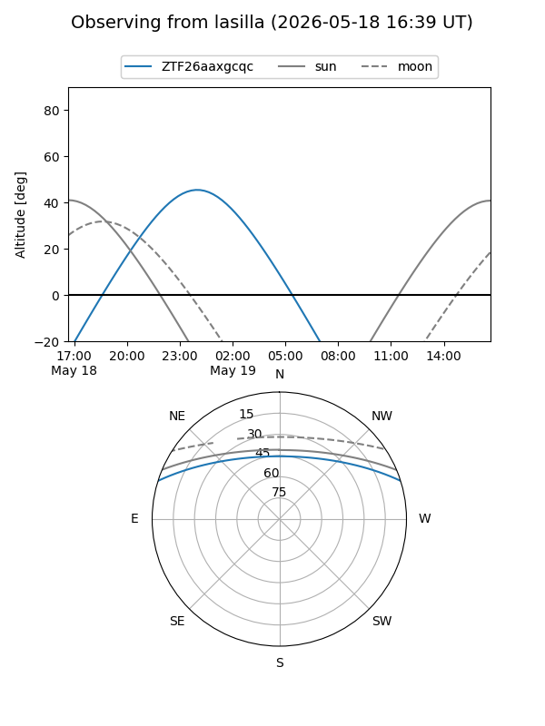
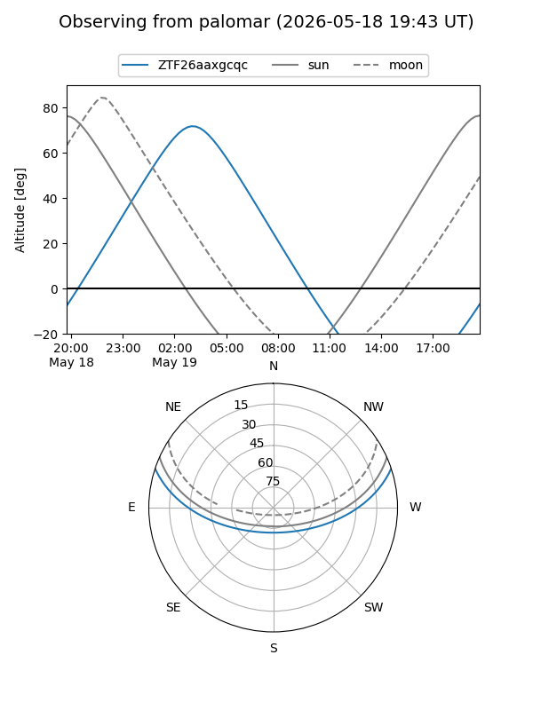

ZTF26aaxgcqc
Target ZTF26aaxgcqc at 2026-05-19 04:36
Aliases and brokers:
FINK: link
Lasair: link
ALeRCE: link
alt names
ZTF26aaxgcqc (ztf,fink_ztf)
Coordinates:
equatorial (ra, dec) = 165.4804,+15.37252
equatorial (HMS+DMS) = 11:01:55.29,+15:22:21.08
galactic (l, b) = (232.1403,+61.99397)
Flags:
Photometry:
last ztfg=20.04
1 ztfg detections
Lightcurve
Visibility


Additional plots